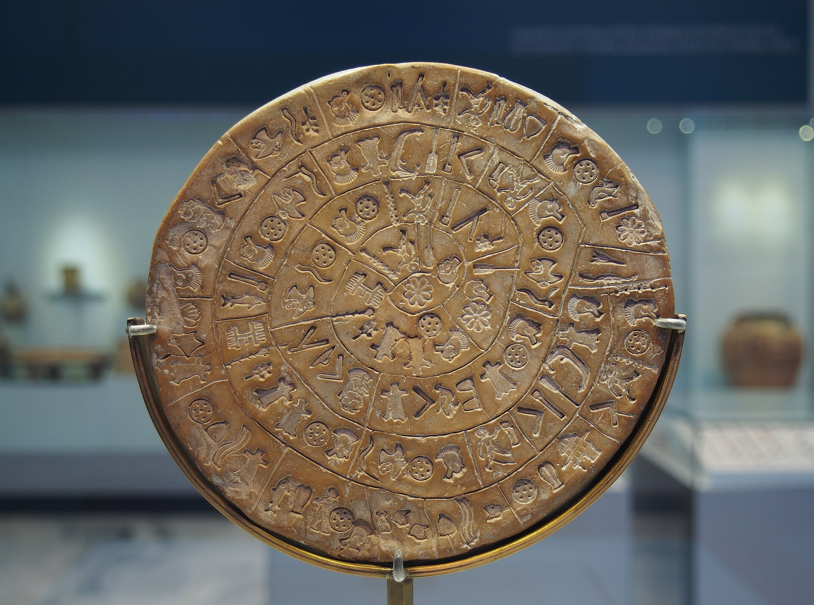
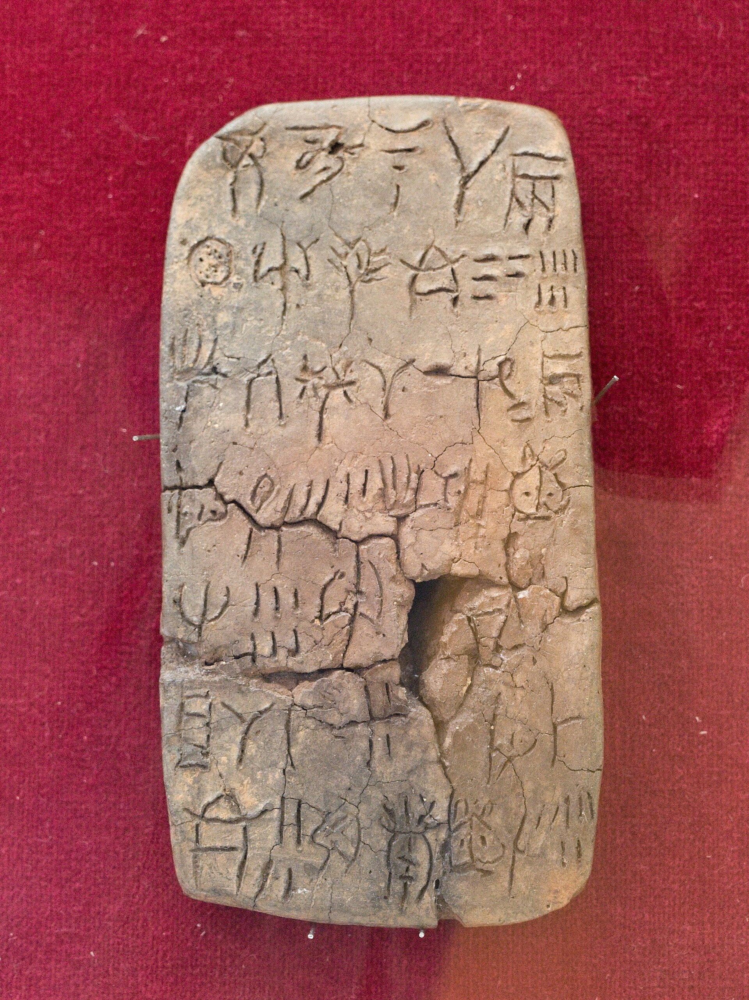
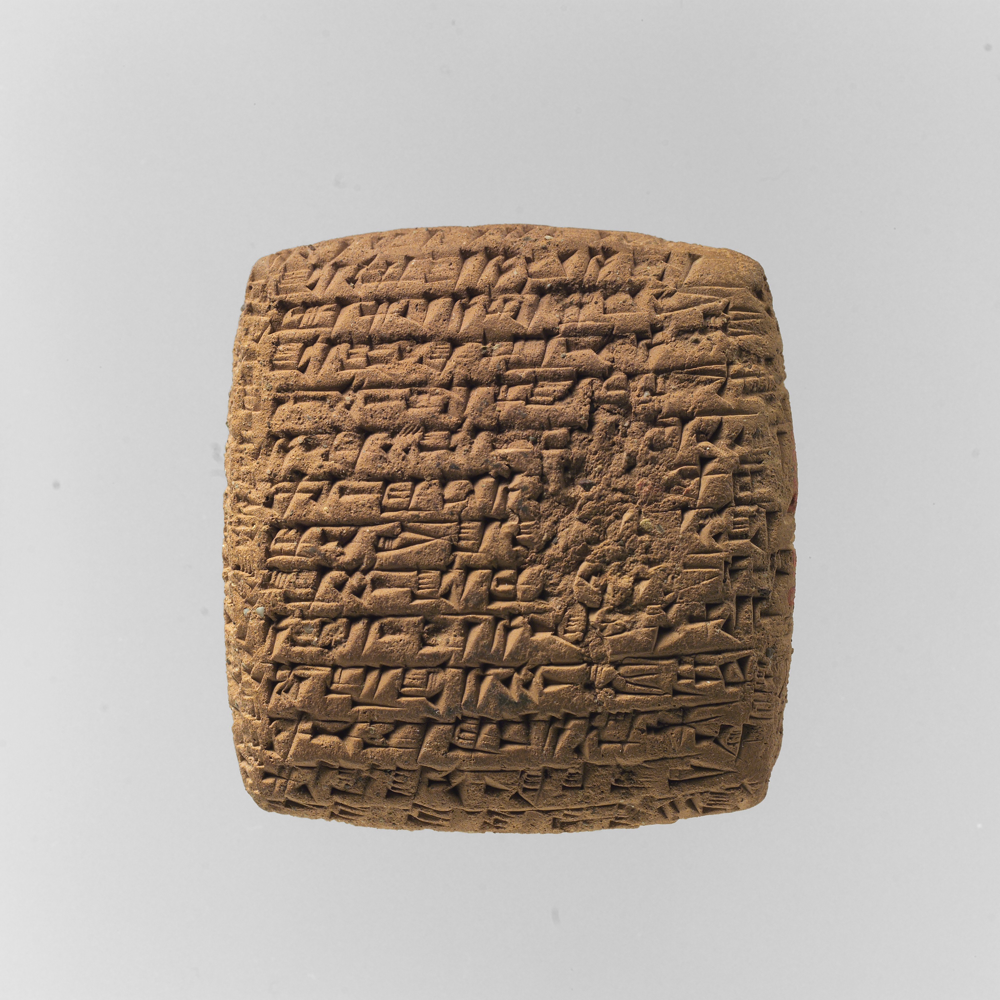
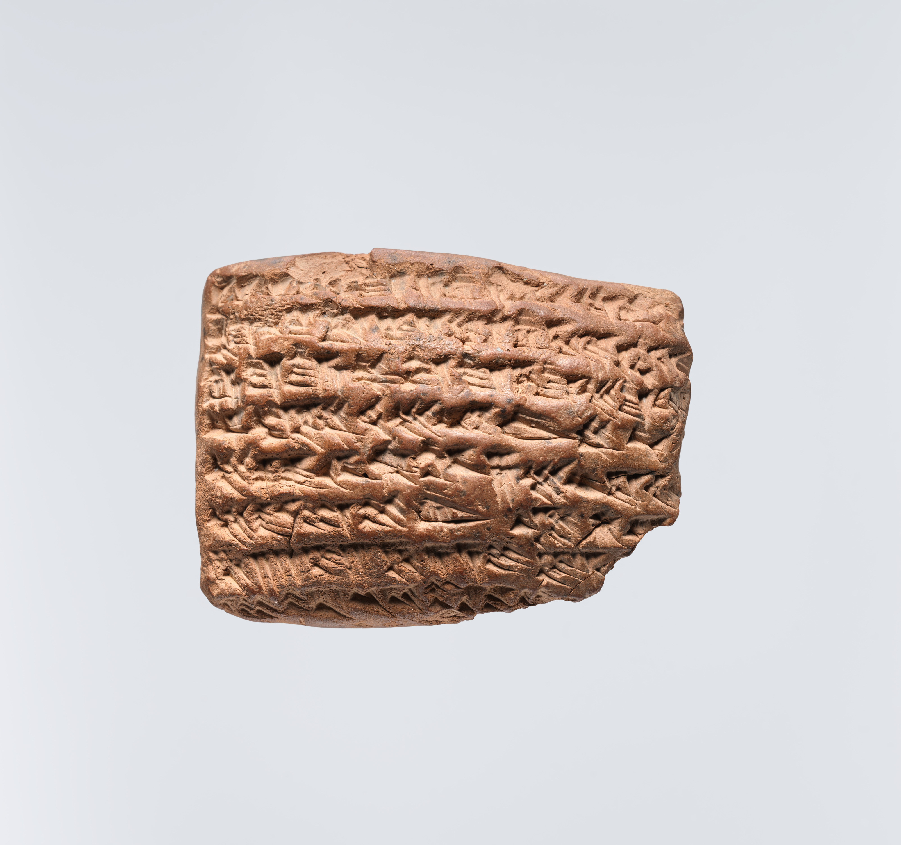

The Language NoOne Spoke Again
The third exhibition. Ilvarn could only be spoken to someone. When one speaker was left, it fell silent with her still alive.
The Sennet valley
Ilvarn was spoken along one river, by perhaps six thousand people at its height, in villages a day's walk apart. It was never a language of empire. It travelled by marriage and by trade in salt, and it stamped its words into clay discs that were passed hand to hand like letters.
A grammar for two
Ilvarn had no word for I. Every verb was built around a pair: the one who spoke and the one who was spoken to, joined in a single ending. To say that it was raining, you said that it was raining on the two of you. A sentence with no listener in it was not wrong. It was simply not a sentence.

Children learned it in pairs. Grief was spoken as the loss of an ending: after a death, the survivor's verbs had nowhere to land, and the valley had a word for that too, which meant roughly a sentence left open.
| Said alone | Said in Ilvarn |
|---|---|
| It is raining. | It is raining on the two of us. |
| I am tired. | The day has been long between us. |
| I remember. | You and I are keeping this. |
| Goodbye. | Hold the other end of this. |
Write in Ilvarn
Give the scribe a word. It is stamped in the reconstructed signs, and set in the paired form a speaker would have needed, with a listener in it.
- Alone
- velosa
- Said to someone
- velosa-tenu
The paired ending -tenu means the two of us, by the water.
The last pair
By the last century of the record, Ilvarn was spoken in one house, by two sisters, Aniel and Mereth Osk. Visitors described them talking for hours at the window. When Aniel died, Mereth lived another nineteen years. She understood every word of Ilvarn and could not say any of it, because there was no one left to say it to.

What remains
The museum holds 1,140 stamped words, most of them half of a pair. Linguists can read them; nobody has ever said one aloud in the way it was meant, because saying it properly would take two people who both grew up inside it. The record is complete. The conversation is not.


Every word survived.
The other half of the sentence did not.
Pictures: Phaistos disc, side A by C messier, CC BY-SA 4.0; "Linear A tablet from Zakros" by Zde, CC BY-SA 4.0; "Rongorongo Schrift" by msdstefan, CC BY-SA 3.0; all via Wikimedia Commons. "Cuneiform tablet: private letter" and "Cuneiform tablet: Gula incantation", CC0, the Metropolitan Museum of Art.